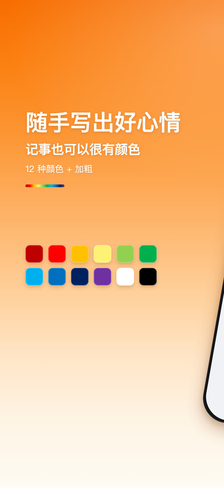
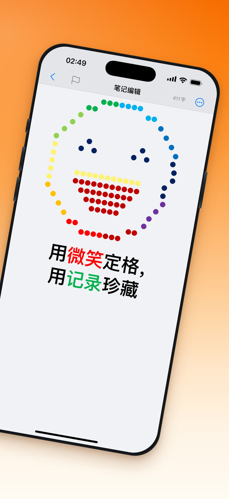

点开就能写
不注册、不学习、不设置。打开 App，光标已经在那里等你了。
免费 · iPhone · 30 种语言
越简单，越高效。极简备忘是一款点开即用、完全免费的记事便签工具，随时随地都能记。
分享
颜色
笔记不必只有黑白。12 种标准色加粗体，就在编辑工具条上，不用翻菜单；而且会记住你上次用的那个颜色。
12 种颜色 + 加粗
用微笑定格，
用记录珍藏。


它能做什么
没有仪表盘，没有新手引导，没有要维护的文件夹树。只留下记事本真正会用到的那几样。
不注册、不学习、不设置。打开 App，光标已经在那里等你了。
一整套标准色和加粗，打字过程中一点即用。
输入关键词，列表实时收窄。不用建文件夹，也不用打标签。
自动跟随系统外观。半夜记下的那条笔记，看上去就该是它本来的样子。
独立的撤销与重做按钮，标题栏实时显示当前字数。
笔记保存在本机数据库里，落盘时经过加密，内容不会上传到服务器。
整个界面可以跟随系统语言，也可以在设置里单独指定一种。
通过 iOS 系统分享面板，把任意一条笔记发到邮件、信息或任何已安装的 App。
检索
输入关键词，笔记列表实时过滤。不用建文件夹、不用打标签、不用花时间整理 —— 要找的那一条自己会浮上来。

深色模式
极简备忘自动跟随系统外观。把 iPhone 切到深色模式，笔记也跟着切，同样的那几种字体颜色在深色背景下依然清楚。

常见问题
是。下载和使用都不收费，写笔记相关的功能也没有需要付费解锁的部分。
不需要。没有注册也没有登录，打开 App 点一下就能写下第一条。
iPhone，系统需要 iOS 16.0 或更高版本。
存在你自己的 iPhone 上，落盘时经过加密。笔记内容不会上传到服务器。
可以。编辑工具条上有 12 种标准色和加粗，并且会记住你上次用过的颜色。
极简备忘内置 30 种语言，可以跟随系统语言，也可以在设置里单独指定。

在微信里扫描这个二维码打开本页，再点右上角「…」分享给朋友或朋友圈。